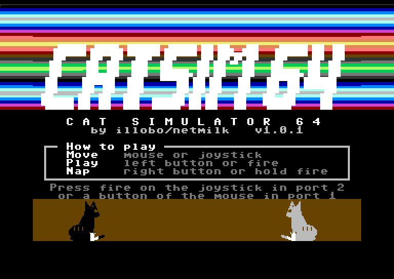
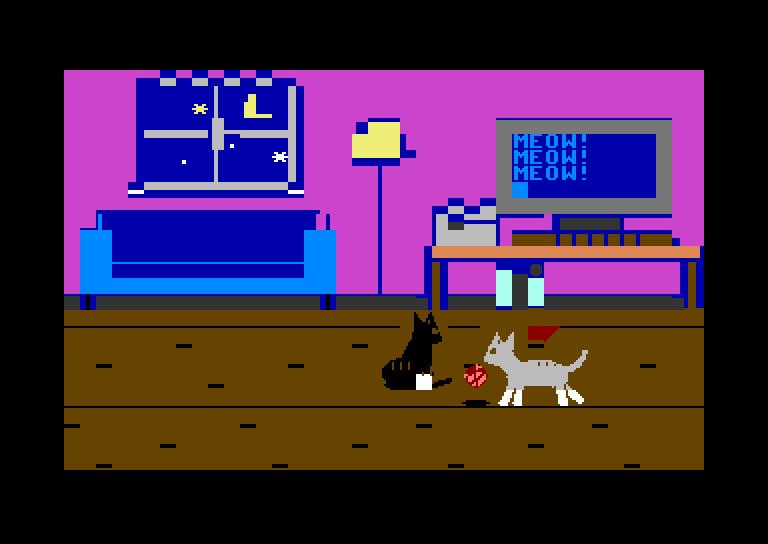
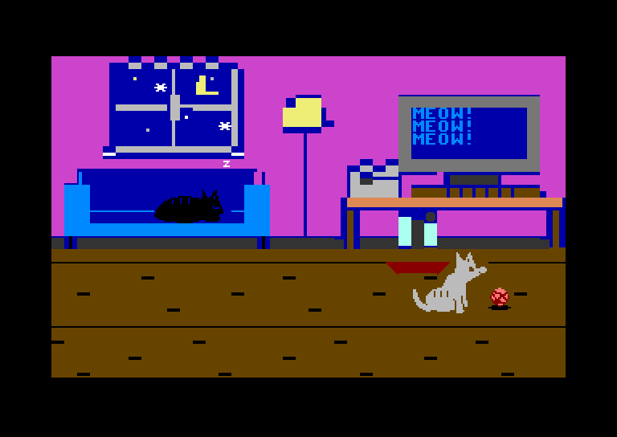
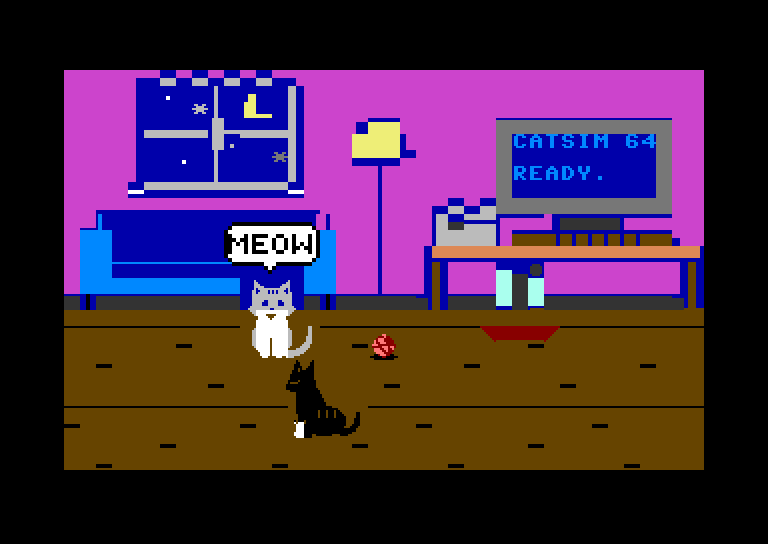
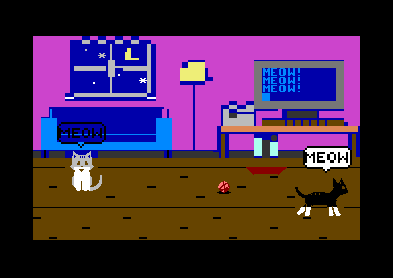
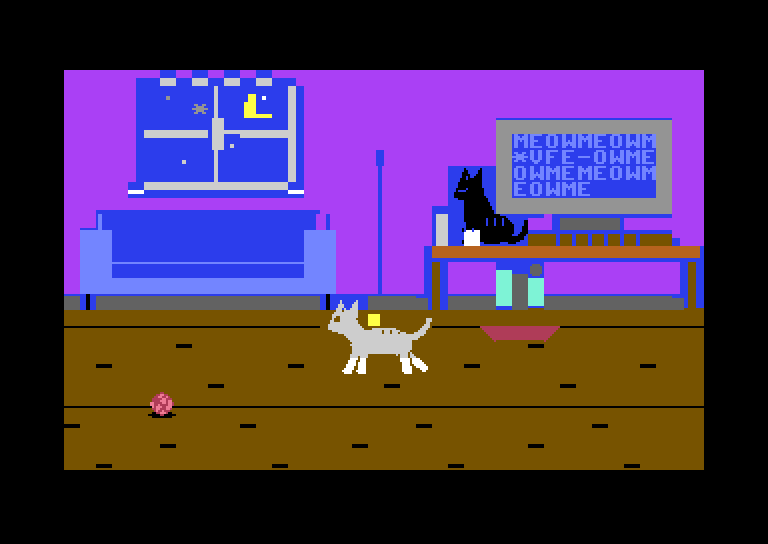
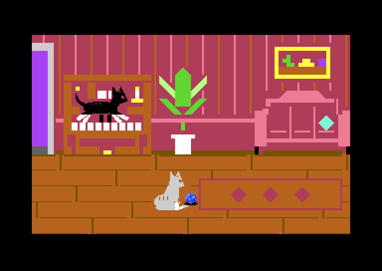

CAT SIMULATOR 64
a game for the Commodore 64 by illobo/netmilk

What is it?
You are a cat! A black cat with white socks.
You live in a cosy room with a grey cat. There is a ball of yarn, a sofa, a food bowl and an old computer.
Run around. Play with the ball. Say hello to the other cat. Eat. Take a nap. Meow!
The grey cat does what it wants. Sometimes it plays. Sometimes it sleeps. If you take its ball, it gets angry and hisses!
New: jump from the sofa to the desk and walk on the computer. Oops, the lamp! Then go right, into the piano room. A cat can play the piano. A cat can scratch the plant too.
Pictures






How to play
Use a mouse (in port 1) or a joystick (in port 2).
| Move | Move the mouse or the joystick. |
| Play | Left mouse button, or fire. Grab the ball. Throw it. Hop on the sofa or the piano. Scratch the plant. Eat. Meow! |
| Big jump | Push up and press the button. From the sofa to the desk. Over the plant. |
| Next room | On the desk, keep going right. To come back, go left through the door. Or press F1. |
| Sleep | Right mouse button, or hold fire. |
| Wake up | Move or press a button. |
Get the game
It works on a real Commodore 64, on a C64 Ultimate, and in the VICE emulator.
Or the program file: catsim64.prg. On a disk, type LOAD"*",8,1 and then RUN.
The code is here too: github.com/illobo/catsim64